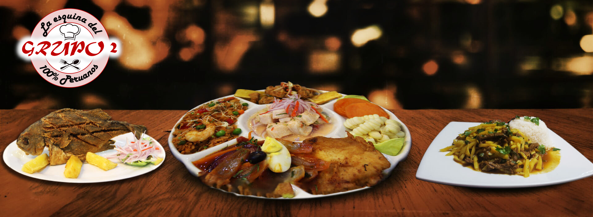

- 


AJI DE GALLINA
Descripción

En Perú, comer es un culto al buen paladar, es expresión de sus múltiples culturas conviviendo en un solo territorio y en los últimos años se ha convertido en parte de la identidad nacional, un elemento unificador del país sobre el cual nadie discute. Los peruanos se han vuelto expertos en experimentar nuevos sabores, en armonizar aromas y descubrir cocciones, y para ello la diversidad de su producción agrícola, sus microclimas, su geografía tan variada, sus múltiples culturas y la genialidad de sus cocineros han enriquecido su cocina al punto de haber sido reconocida como una de las mejores expresiones gastronómicas a nivel mundial, a la par de la comida italiana o francesa. Un reconocimiento internacional que se produce gracias a elaboraciones como este Ají de Gallina, una receta ofrecida por el portal oficial de Turismo de Perú, y uno de los platos favoritos de los peruanos, aderezado en leche, pan, ají amarillo, etc.
Ingredientes
(Para 4 personas)
- Una pechuga de gallina
- Un hoja de laurel
- 2 tazas de mixtura de verduras(zanahoria, apio y poro)
- Un pan francés
- 2 tazas de leche
- 1/4 de taza de aceite
- Una cebolla picada
- 4 dientes de ajo
- 1/2 taza de crema de aji amarillo
- 1/4 de cucharadita de comino
- 1/2 cucharadita de palillo
- 1/4 de comino
- 1/4 de taza de pecanas tostadas y picadas
- 1/2 taza de queso parmesano
Elaboración
Cocinar la pechuga con sal, laurel y verduras, separar el caldo y deshilachar la gallina. Luego, desmenuzar el pan y dejarlo remojar unos minutos en una taza de leche, para finalmente licuarlo. Reservar la preparación.
Aparte, en una olla, preparar el aderezo con cinco cucharadas de aceite, cebolla, dientes de ajo, la crema de ají amarillo, comino y palillo. Rehogar al aderezo pequeñas cantidades del caldo de la gallina y añadir el pan licuado. Cocinar, removiendo constantemente, agregando el caldo.
Sazonar, añadir la leche restante y dejar cocer a fuego bajo. Incorporar la gallina deshilachada, las pecanas, y esparcir el queso parmesano. Esperar a que tome punto.
Acabado y presentación. Un delisioso Aji de Gallina.